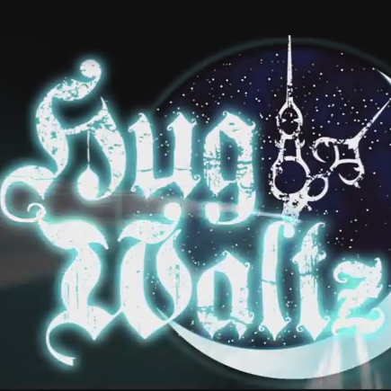
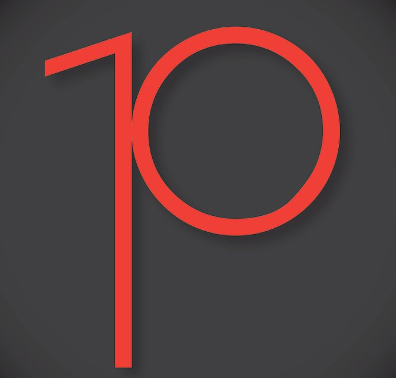
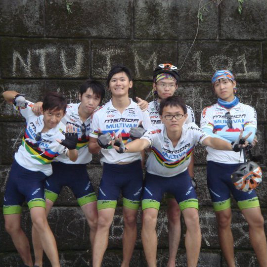
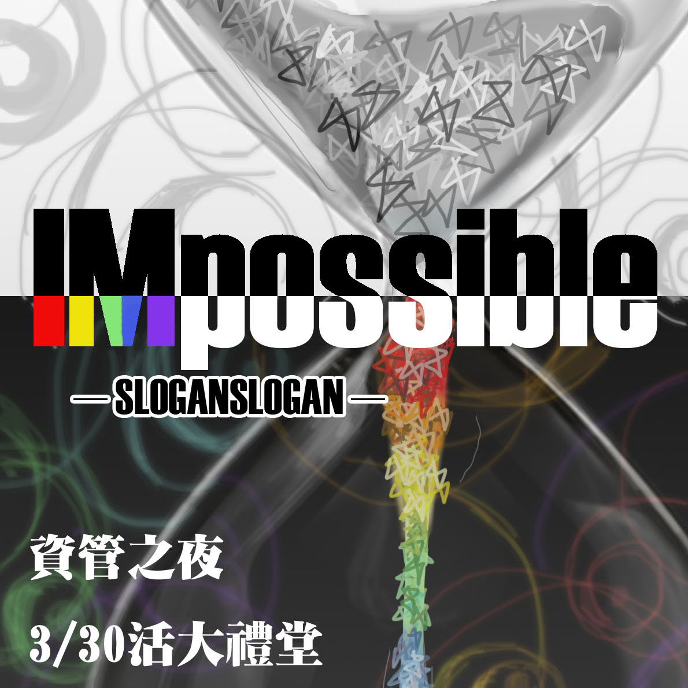

活動經歷
下一代作曲人
以『朋友那並不是愛情』歌曲獲icd銀河愛音樂
選為 第14期『下一代作曲人』

台灣大學畢業舞會
擔任台大畢業舞會影片組音樂負責人
製作音樂、音效以及事後配音

Project 10
一群由台大學生組成的團隊
拍攝十集台大校園的生活短片
其特殊風格曾受報紙、雜誌、電視報導
本人為音樂組成員，參與配樂、收音、editing等工作

超擊掌門人
環島期間與三百位相遇的士農工商擊掌合影
此企劃獲得美麗達及台北市青輔會八萬元補助
遊記被收錄『二十種單車環台方式』一書
並邀上警察廣播電台Live連線及TVBS專訪
台大訊練營 總召
企劃四天三夜教育性營隊
包括活動、課程、招生、行銷等事宜
參與人數一百餘人，活動經費約莫30萬元

台大資管之夜
擔任副召，處理一切行政上事務
另外擔任Acappella表演負責人及編曲

恁老蝨動畫網
創創學程時主導的一個企劃
製作一個以歌曲引導教學的網站
幫助高中科目的記憶及背誦
DTV數位電視創意競賽
以智慧型手機以及智慧電視做結合
拍攝視訊求婚短片，獲得兩萬元獎金